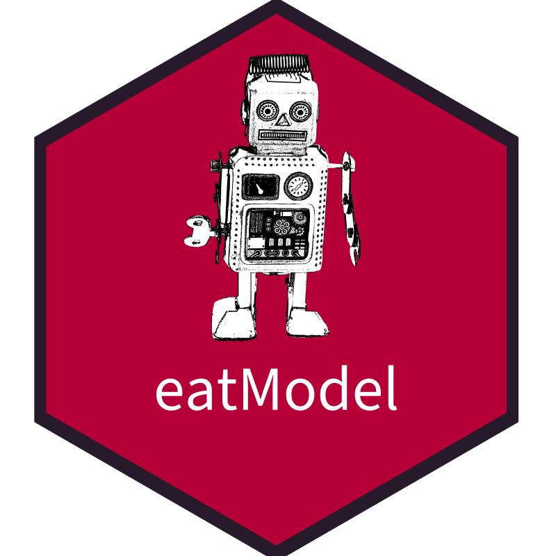

eatModel 
Overview
eatModel (Educational Assessment Tools for IRT Modeling) provides functions to compute IRT models (Rasch, 2PL, partial credit, generalized partial credit) using the software Conquest or the R packages TAM and mirt.
Installation
# Install eatRep from GitHub via
remotes::install_github("weirichs/eatModel", upgrade="never")Exemplary analysis
The package comes with two relatively large examplary data sets, one only for dichotomous items, one also for polytomous items. First data set (trends) contains fictional achievement scores of 13524 students in two domains (reading, listening) from three measurement occasions (2010, 2015, 2020) in the long format. The data are not longitudinal as the individuals stem from different cohorts and do not overlap across measurement occasions. The name of the data set is trends. You can find detailed exemplary analyses in the help pages of defineModel(). The following example estimates a between-item two-dimensional 2pl model with conditioning (background) model for the student cohort measured in 2020. The splitModels() function can be used previously if the corresponding model should be estimated in 2010 and 2015 likewise.
library(eatModel)
### load exemplary data
data(trends)
### choose data for 2020 and prepare data in the wide format
### To speed up the analysis, only one booklet is selected here.
dat2020<- reshape2::dcast(subset(trends, year == 2020 & booklet == "Bo08"),
idstud+country+sex+ses+language~item, value.var="value")
### create Q matrix indicating which item belongs to which latent dimension.
qMat <- unique(trends[ ,c("item","domain")])
qMat <- data.frame(qMat[,"item", drop=FALSE], model.matrix(~domain-1, data = qMat))
### specify the model
def <- defineModel(dat = dat2020, id = "idstud", items = colnames(dat2020)[-c(1:5)],
qMatrix = qMat, HG.var = c("sex", "ses", "language"), irtmodel = "2PL", software = "tam")
### run the model
run <- runModel(def)
### collect the results
results<- getResults(run)
### extract item parameters from results
items <- itemFromRes(results)
### extract WLEs from results
wles <- wleFromREs(results)
### show results of latent regression model
regcoefFromRes(results)Exemplary partial credit analysis
The second exemplary data set is named reading and contains dichotomous as well as polytomous items from a large-scale reading competence assessment. In the following we demonstate a generalized partial credit model (GPCM) using TAM.
# load partial credit long format data
data(reading)
# transform into wide format. Again, we use only a small subsample to reduce computational burden
datW <- subset(reading, bookletID == "TH08") |> reshape2::dcast(idstud~item, value.var = "valueSum")
# combine the two lowest categories for item D205143 to avoid categories with too few observations
datW[,"D205143"] <- car::recode(datW[,"D205143"], "1=0; 2=0; 3=1; 4=1; 5=2")
# # define the model
def2<- defineModel(dat = datW, items = -c(1:4), id = "idstud", irtmodel = "GPCM",software="tam")
run2<- runModel(def2)
res2<- getResults(run2)
it2 <- itemFromRes(res2)